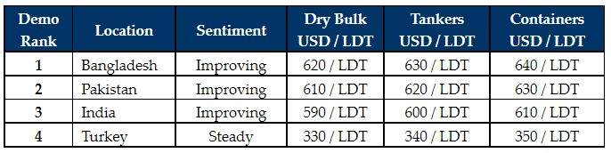

inWeekly Demolition Reports07/02/2022

Chinese (Lunar) New Year holidays concluded this week and there appears to be a real spring in the step of industry players, as international ship recycling markets continue to push on once again.
Both, Pakistan and Bangladesh, have been at the forefront of this recent resurgence, with an improved India (that is still unable to compete on any regular / non-HKC / non-specialist tonnage) and a relatively stable Turkey that has defied explanation for the most part with its remarkably firm / stable levels (especially in light of the collapsing Lira) and even a noteworthy improvement in import steel registering this week.
Sub-continent prices have managed to surge past USD 650/LT LDT on certain select units once again – such is the hunger of Cash Buyers and sub-continent Recyclers alike – just to secure a piece of the dwindling shortage of tonnage at present.
Steel plate prices across the board have been a key driver to the spectacular showings of late, as construction / infrastructure projects ramp up once again, with the worst of Convid-19 and its associated lockdowns and restrictions, seemingly easing of late.
Regrettably, the number of the comparatively less dangerous Omicron cases are on the rise globally even though the combination of vaccines and boosters appear to be (temporarily?) keeping the worst of it at bay – at least until news of another mutation invariably surfaces.
On the sales front, there was news of one 2002 built VLCC and another large LDT Aframax tanker sale to report this week, as opportunistic Owners returning from holidays seek to cash in at these admittedly fantastic levels, amidst continuing poor tanker charter rates.
For week 5 of 2022, GMS demo rankings / pricing for the week are as below.

📄 Download PDF: 2022-02-07Dpn_org.pdfSource: GMS,Inc. (https://www.gmsinc.net/gms_new/index.php/web)